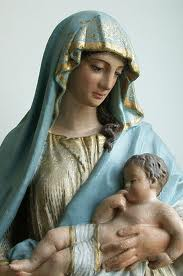
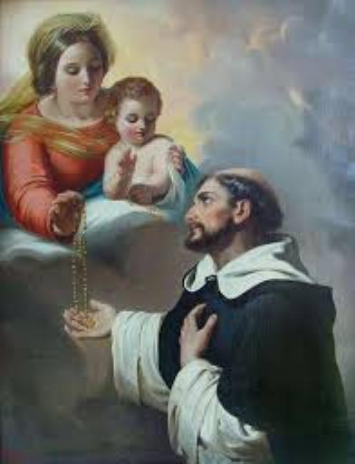

“INSTITUIÇÃO E CRIAÇÃO”
O SANTO ROSÁRIO é composto
da “ORAÇÃO DE JESUS” e pela SAUDAÇÃO ANGÉLICA, ou seja, pelo
“PAI NOSSO” e pela
“AVE MARIA”, 
Na verdade, conforme as revelações do Bem-Aventurado Alano de La Roche, continuador da Obra de São Domingos de Gusmão, ele descreve dando detalhes de como os fatos aconteceram. Isto porque, na época da instituição, o Rosário era um pouquinho diferente daquele que rezamos hoje, e os fatos aconteceram assim: São Domingos vendo que os crimes da humanidade eram um terrível obstáculo a conversão dos hereges albigenses e pecadores no sul da França em 1214, triste e pensativo sentou-se na encosta de um pequeno morro a sombra de uma arvore da floresta próxima a Toulouse, onde passou três dias em continua orações e penitências. A SANTÍSSIMA VIRGEM MARIA tendo ao colo o MENINO JESUS lhe apareceu e disse: “Domingos a principal arma que a SANTÍSSIMA TRINDADE usou para reformar o mundo foi o SALTÉRIO ANGÉLICO, que é o fundamento do NOVO TESTAMENTO. Portanto, se queres ganhar para DEUS esses corações endurecidos, reza o MEU SALTÉRIO”.
O Santo levantou-se emocionado e cheio de zelo pela salvação daqueles infelizes, foi correndo para a Catedral, porque logo queria anunciar ao povo. Por intervenção Angélica os sinos começaram a tocar veementemente, convidando os habitantes a se reunirem no Templo, o que aconteceu num tempo bem curto. E assim, quando Domingos começou a falar, levantou-se uma tempestade imensa, a terra tremeu, repetidos trovões e relâmpagos fizeram estremecer todos os ouvintes. O terror aumentou ainda mais quando viram uma bela imagem de NOSSA SENHORA também no Altar, levantar os braços por três vezes, como a suplicar a DEUS a conversão dos hereges e dos pecadores. Com certeza, o Céu queria com aqueles prodígios aumentar e dar ênfase às palavras de São Domingos, e também, estimular a devoção a SANTÍSSIMA VIRGEM MARIA. Desse modo, abria espaço no coração dos fieis para acolher com fervor o SANTO ROSÁRIO que São Domingos com tanto empenho e dedicação, passou a propagar naquele celebre sermão. Descreve o Bem-Aventurado Alano, que quase todos os habitantes de Toulouse acolheram e passaram a rezar o ROSÁRIO, renunciando os seus próprios erros, tornando-se pessoas mais alegres e felizes.
Esta realidade evidência o grande desejo Divino de que o povo buscasse a conversão do coração, mostrando com grande realce que o lançamento do SANTO ROSÁRIO foi precedido e acompanhado por grandes manifestações da natureza, com a finalidade de colocar o fato na memória de todos, a fim de que o acontecimento não fosse esquecido e sim, constantemente lembrado e divulgado.
“O PODER DIVINO DO ROSÁRIO”

Em outra oportunidade São Alano de La Roche descreveu que NOSSA SENHORA apareceu e disse a São Domingos: “Domingos, alegro-ME de ver que não te apóias sobre a tua própria sabedoria, e que trabalhas com humildade pela saúde das almas, ao invés de tentar agradar aos homens vãos. Todavia, muitos pregadores querem sem demora levantar a voz contra os pecados mais graves, ignorando que antes de dar um remédio penoso e amargo ao pecador, é preciso preparar o doente de modo a poder tratá-lo convenientemente. Significa dizer que devem primeiro exortar e explicar aos pecadores e a todos os ouvintes, o cultivo do amor e da oração, especialmente o MEU ANGÉLICO SALTÉRIO; isto porque, se todos começarem a rezá-lo, não há razão para duvidar que a Divina Clemência não seja propícia àqueles que perseverarem. Por isso mesmo, rezai o MEU ROSÁRIO”.
A partir desta época, as palavras de NOSSA SENHORA foi sendo divulgada com frequência e todos os pregadores passaram a rezar a SAUDAÇÃO ANGÉLICA para obterem a Graça Divina, antes de fazerem os seus Sermões. E a razão principal vem de uma revelação feita a São Domingos, na mesma época, pela SANTÍSSIMA VIRGEM MARIA: “MEU filho, não te espantes de não seres bem sucedido nos teus sermões. Porque lavras um solo seco, que não foi regado pela chuva. Saiba que, quando DEUS quis renovar o mundo, ELE enviou primeiro a chuva da SAUDAÇÃO ANGÉLICA; e por esse modo é que o mundo foi reformado (com a vinda de JESUS). Exorta, pois, os homens nos teus sermões, a rezar o MEU ROSÁRIO, e recolherás grandes frutos para as almas”.
Assim fez São Domingos, e suas pregações obtiveram um sucesso imenso e admirável.
“EXPLICAÇÃO DA MÃE DE DEUS”
Para animar ainda mais a São Domingos na pregação do SANTO ROSÁRIO, certo dia NOSSA SENHORA lhe disse: “Tu foste um grande pecador na tua juventude, mas obtive de MEU FILHO a tua conversão; rezei por ti e desejei, o quanto fosse possível, passar por toda a espécie de sofrimento para te salvar, porque os pecadores convertidos são a MINHA Glória e porque EU queria tornar-te digno de pregar o MEU ROSÁRIO”.
São Domingos trabalhou incansavelmente e colheu imensos e admiráveis frutos entre os povos, através desta bela devoção que pregava continuamente. Por isso, dizia sempre aos Sacerdotes: “Vê os frutos que colhi pela pregação do SANTO ROSÁRIO; faz o mesmo, tu e todos aqueles que amam a SANTÍSSIMA VIRGEM, a fim de atrair, pelo Santo exercício do ROSÁRIO, todos os povos à verdadeira ciência das virtudes”.
Com estas palavras e estes fatos, a história nos ensina sobre o estabelecimento do SANTO ROSÁRIO por São Domingos e da renovação do mesmo, pelo Bem-Aventurado Alano de La Roche.
“OUTROS DETALHES IMPORTANTES”
Já dissemos anteriormente e confirmamos, o SANTO ROSÁRIO é composto da “Oração Dominical” (o PAI NOSSO que JESUS ensinou aos Apóstolos e nos mandou rezar) e da “Saudação Angélica” (Aquelas palavras, ordenadas pelo PAI CRIADOR, que o Arcanjo Gabriel disse a VIRGEM MARIA, no encontro da Anunciação). Significa dizer que o SANTO ROSÁRIO, é aquela água clara, volumosa e perpétua que corre da “Fonte da Graça”, inundando a alma dos fiéis que fervorosamente o meditam e rezam.
A AVE MARIA é um orvalho Divino que caindo na alma de um predestinado, lhe comunica uma fecundidade admirável para produzir todas as espécies de Virtudes. Quanto mais a alma é regada por esta oração, mais ela se torna iluminada, abrasada no seu coração e forte contra os inimigos.
A AVE MARIA é também, um dardo penetrante e inflamado, que lançada por um pregador que anuncia a Palavra de DEUS, lhe dá a força de penetrar, de tocar, de transformar e converter corações, até aqueles mais endurecidos.
Estais sós, em terrível dificuldade, sem saber para que lado sair! Invoque a SANTA MÃE MARIA e dizei-LHE: “Querida MÃE, salva-me pelo VOSSO imenso e carinhoso Amor".
Como resultado imediato, NOSSA SENHORA o colocará sob a proteção e a salvaguarda de DEUS.
O ROSÁRIO REZADO COM A MEDITAÇÃO DOS MISTÉRIOS:
a) Eleva-nos gradualmente ao perfeito conhecimento de JESUS CRISTO;
b) Purifica nossa alma dos pecados cometidos;
c) Nos dá força, sabedoria e inteligência para vencer todos os inimigos;
d) Abrasa-nos de amor a JESUS e a VIRGEM MARIA
e) Nos enriquece de Graças e Méritos;
f) Nos permite pagar todas as nossas dívidas e ofensas aqui na Terra: praticadas contra DEUS e contra a humanidade.
“A CONFRARIA
DO SANTO ROSÁRIO”
São Domingos, querendo propiciar as pessoas de todos os lugares, cidades e nações, a riqueza de graças e benefícios que a SANTÍSSIMA VIRGEM MARIA derrama aos filhos fiéis e praticantes, desde aquela época criou a CONFRARIA, com a especifica finalidade de rezar o SANTO ROSÁRIO difundir a sua devoção em todas as partes, em todos os países e no mundo inteiro. Quer inflamar todos os corações cristãos a meditar nos Mistérios da Vida, Paixão, Morte e Gloriosa Ressurreição de NOSSO SENHOR JESUS CRISTO, iluminando as mentes pela luz da fé, dissipando as trevas do erro e fazendo brilhar com amor e intensidade, o esplendor da verdade revelada por DEUS ao mundo.
Sobretudo é importante e bem relevante, considerar a verdade de que rezar o SANTO ROSÁRIO é sinal de predestinação, é graça de DEUS aos que ELE quer que morram Santos.
E por isso mesmo, ser fiel a reza do SANTO ROSÁRIO é edificar a convicção da eterna salvação. É glorificar NOSSO SENHOR e a SANTÍSSIMA VIRGEM MARIA pela Meditação dos SEUS Mistérios e das SUAS Virtudes. É deixar bem visível e claro, o seu imenso amor por ELES.
“DEVERES DOS CONFRADES”
1 – Não existe para os Confrades um dever absoluto que os obrigue a rezar o SANTO ROSÁRIO, sob pena de pecado. No entanto, não poderão gozar de todas as vantagens da CONFRARIA se não recitarem todo o SANTO ROSÁRIO, pelo menos uma vez por semana. Este é o seu único dever.
2 – Aqueles que acidentalmente descuidarem da reza do SANTO ROSÁRIO continua pertencendo a CONFRARIA, mas priva-se de preciosas vantagens.
3 – O Confrade do Rosário, se desejar, pode também ser membro de outra Confraria (Irmandade do SANTÍSSIMO, Irmandade do SAGRADO CORAÇÃO DE JESUS, Apostolado da Oração, etc.) ou mesmo de outras Associações do ROSÁRIO: ROSÁRIO PERPÉTUO, ROSÁRIO VIVO, CRUZADA DO ROSÁRIO.
4 – A reza do TERÇO quotidiano e mesmo o esforço para rezar o ROSÁRIO quotidiano é o ideal, esforço providencial que se recomenda a todos os Confrades, com objetivo de sempre progredir gradativamente até alcançar a meta ideal, ou seja, de rezar com normalidade diariamente o SANTO ROSÁRIO.
“VANTAGENS DA CONFRARIA”
1º - PROTEÇÃO ESPECIAL DA SANTÍSSIMA VIRGEM MARIA: São inumeráveis os testemunhos da história que nos provam as Graças e os favores de todas as espécies, mesmo Milagres que os Confrades obtiveram da RAINHA DO SANTÍSSIMO ROSÁRIO. Só para recordar um fato histórico, a famosa Batalha Naval contra os Turcos em Lepanto vencida pela Armada Cristã por um milagre da MÃE DE DEUS, em 7 de Outubro de 1571.
2º - PARTICIPAÇÃO NOS BENS ESPIRITUAIS, acumulados no tesouro comum pelas orações de todos os Confrades em todas as regiões. Igualmente participação nos méritos da grande família Dominicana acumulados desde oito (8) séculos.
3º - NUMEROSAS INDULGÊNCIAS. Mais de trinta (30) Papas enriqueceram a Confraria com Indulgências.
EXEMPLOS DE INDULGÊNCIAS PLENÁRIAS:
- No dia da Admissão na Confraria (mediante Confissão e Comunhão).
- No dia 7 de Outubro, anualmente, Festa Patronal da Confraria, ou Visitar uma Igreja de NOSSA SENHORA DO ROSÁRIO. Ganha a Indulgência tantas vezes quantas se visita a referida Igreja. (Tendo feito a Confissão, Comunhão e Oração pelo triunfo da Igreja).
- Na Hora da Morte, Indulgência Plenária (estando em estado de Graça).
- Indulgência Plenária na FESTA DO CORPO DE DEUS (CORPUS CHRISTI)
OUTRAS INDULGÊNCIAS:
- Por cada TERÇO rezado dez anos de Indulgência.
- Por cada vez que pronunciar devotamente os Santos Nomes de JESUS e de MARIA, sete dias de Indulgência.
- Aos que devotamente carregam o SANTO ROSÁRIO, 100 dias de Indulgência.
- E muitas outras Indulgências numa longa e variada relação.
“INDICAÇÕES IMPORTANTES”
a)Em relação aos TERÇOS Bentos: Qualquer Sacerdote pode benzer o seu TERÇO utilizando a formula própria da Ordem dos Frades Pregadores, que se encontra no ritual romano (Benedictio coronarum sacratissimi Rosarii B.M.V., Appendix nº 35)
A CONFRARIA DO ROSÁRIO quer responder – de acordo com a sua condição religiosa – aos pedidos da SANTÍSSIMA VIRGEM MARIA em Fátima, rezando com disposição e amor, a fim de que o Papa consagre a Rússia ao CORAÇÃO IMACULADO DE MARIA, pedindo aos Bispos de todo o mundo que se unam a ele. A CONFRARIA não esqueceu o que NOSSA SENHORA quis nos transmitir através da Irmã Lúcia, a saber, que “DEUS dava os dois últimos remédios ao mundo: o SANTO ROSÁRIO e a COMUNHÃO REPARADORA, no Primeiro Sábado de Cinco Meses Seguidamente, em REPARAÇÃO DAS BLASFÊMIAS contra o IMACULADO CORAÇÃO DE MARIA”, e sendo estes os dois últimos remédios, isso significa dizer que não haverá outros para o mundo.
Na crise sem precedentes que atravessam a Igreja e o mundo, a bóia de salvação dada pelo Céu para a humanidade perseverar na verdadeira fé Católica e na Vida Cristã, é, pois a Devoção dos Cinco Primeiros Sábados de Cada Mês, seguidamente, e com a Meditação quotidiana do SANTO TERÇO:
 "COMUNHÃO REPARADORA"
"COMUNHÃO REPARADORA"
Foi instituída para consolar e desagravar a SANTÍSSIMA TRINDADE e o IMACULADO e SAGRADO CORAÇÃO da SANTÍSSIMA VIRGEM MARIA, por causa de todos os pecados, transgressões e blasfêmias que diariamente são perpetrados contra ELES.
Deverá estar em estado de graça, ou alcançar este estado através da Confissão Sacramental, preparando-se dignamente para receber o SENHOR na Sagrada Eucaristia em cinco (5) primeiros sábados de cada mês, seguidamente. Após a Santa Missa, ou em outro horário, na mesma Igreja ou em outra, fazer companhia a NOSSA SENHORA durante (15) minutos diante de SUA Imagem, refletindo sobre os quinze Mistérios do Rosário, e em seguida rezar um Terço, também na Igreja ou em outro local.
“CONSELHOS"
Não recitemos os nossos SAGRADOS TERÇOS demasiadamente depressa, até entrecortando palavras para ser mais rápido. Tenham absoluta certeza, que uma dezena rezada pausadamente proporcionará mais benefício do que um SANTO ROSÁRIO rezado aos tropeços, demasiadamente rápido.
As Distrações existem e acontecem. Estamos rezando conscientemente e meditando nas orações, quando de repente, contra a nossa vontade, o nosso espírito nos escapa. Não existe culpa, e por isso, a oração não perde os seus frutos. No entanto os frutos teriam sido maiores, se tivéssemos aplicado melhor. Quando se trata de distrações involuntárias, consequência da fragilidade humana, elas devem ser afastadas delicadamente e pacientemente, como se fossem moscas ou besouros que viessem nos incomodar. Elas não tiram o fruto da oração. Ofereçamos as nossas dificuldades a NOSSO SENHOR e a MÃE DE DEUS, suplicando auxílio, e por outro lado, sirvamo-nos das mencionadas distrações para conhecermos melhor a nossa miséria espiritual e nos humilharmos, alcançando do SENHOR maior concentração e paz espiritual.